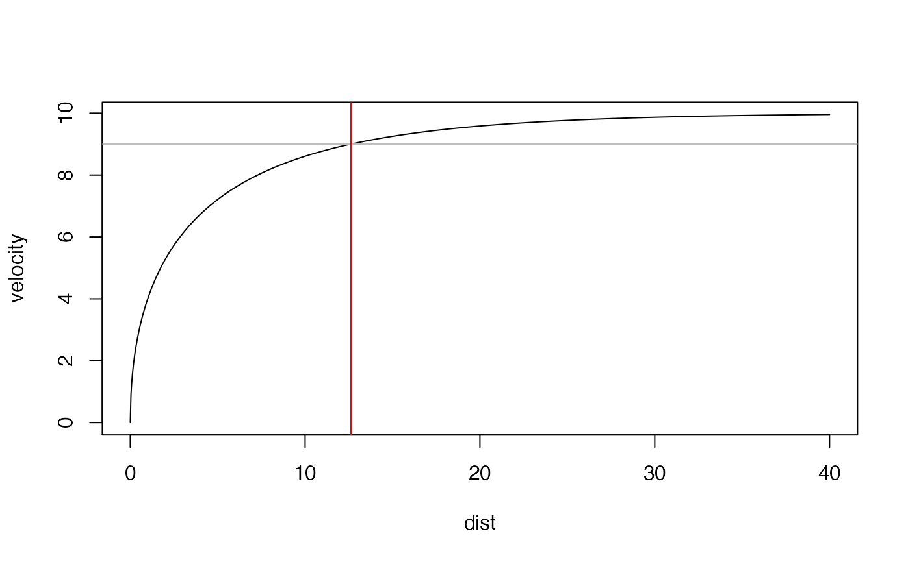
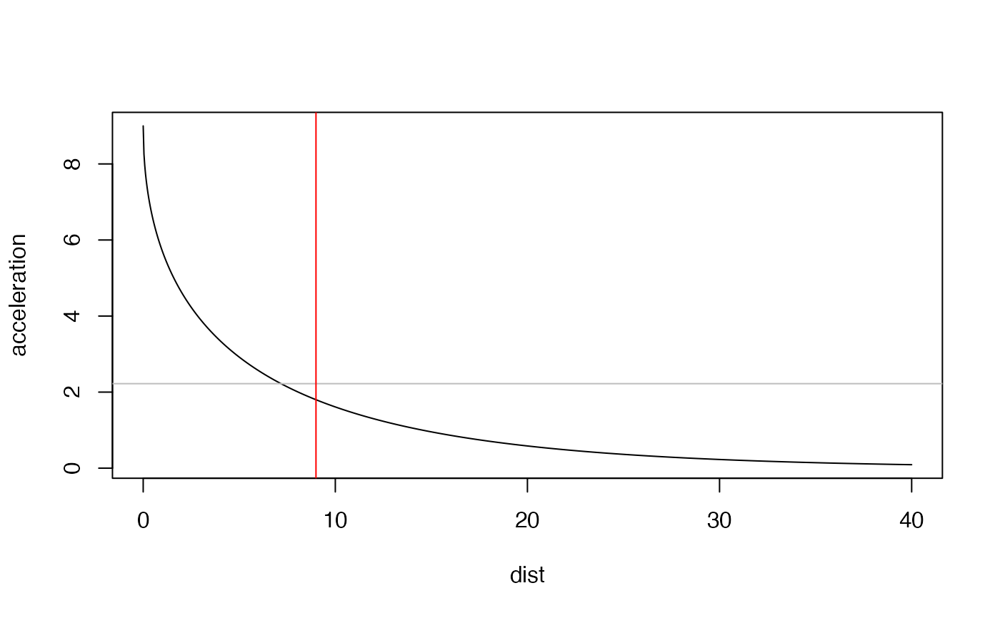
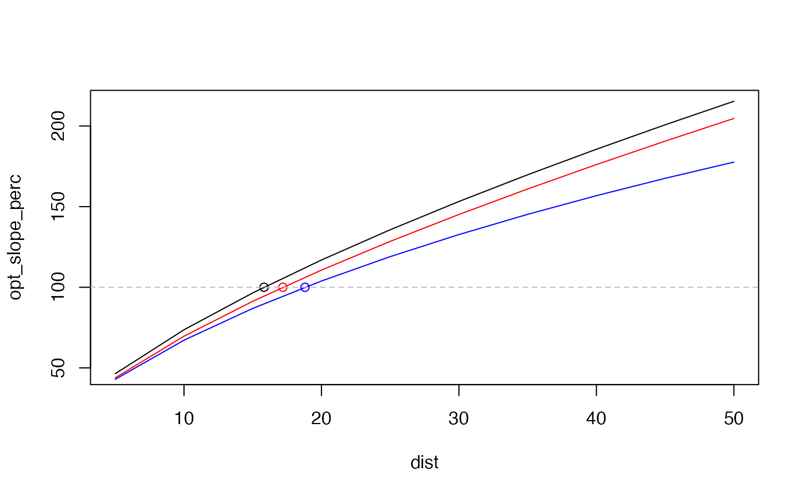

Family of functions that serve a purpose of finding maximal value and critical distances and times at which power, acceleration or velocity drops below certain threshold.
find_max_power_distance finds maximum power and distance at
which max power occurs
find_max_power_time finds maximum power and time at which
max power occurs
find_velocity_critical_distance finds critical distance at which percent
of MSS is achieved
find_velocity_critical_time finds critical time at which percent of MSS
is achieved
find_acceleration_critical_distance finds critical distance at which percent
of MAC is reached
find_acceleration_critical_time finds critical time at which percent of
MAC is reached
find_power_critical_distance finds critical distances at which maximal power over
percent is achieved
find_power_critical_time finds critical times at which maximal power over
percent is achieved
find_optimal_FV finds "optimal" F0 and V0 where time at distance is
minimized, while keeping the Pmax the same
find_optimal_MSS_MAC finds "optimal" MSS and MAS where time at distance is
minimized, while keeping the Pmax the same
find_optimal_FV_distance finds the distance for which the
FV profile is optimal
find_optimal_MSS_MAC_distance finds the distance for which the
sprint profile is optimal
find_optimal_FV_peak finds "optimal" F0 and V0 where time at distance is
minimized, while keeping the Ppeak the same
find_optimal_FV_peak_distance finds the distance for which the
FV profile is optimal
find_max_power_distance(MSS, MAC, ...)
find_max_power_time(MSS, MAC, ...)
find_velocity_critical_distance(MSS, MAC, percent = 0.9)
find_velocity_critical_time(MSS, MAC, percent = 0.9)
find_acceleration_critical_distance(MSS, MAC, percent = 0.9)
find_acceleration_critical_time(MSS, MAC, percent = 0.9)
find_power_critical_distance(MSS, MAC, percent = 0.9, ...)
find_power_critical_time(MSS, MAC, percent = 0.9, ...)
find_optimal_FV(distance, F0, V0, bodymass = 75, ...)
find_optimal_MSS_MAC(distance, MSS, MAC)
find_optimal_FV_distance(
F0,
V0,
bodymass = 75,
min = 1,
max = 60,
metric = "slope_perc",
min_func = function(metric) (100 - metric)^2,
...
)
find_optimal_MSS_MAC_distance(
MSS,
MAC,
min = 1,
max = 60,
metric = "slope_perc",
min_func = function(metric) (100 - metric)^2
)
find_optimal_FV_peak(distance, F0, V0, bodymass = 75, ...)
find_optimal_FV_peak_distance(
F0,
V0,
bodymass = 75,
min = 1,
max = 60,
metric = "slope_perc",
min_func = function(metric) (100 - metric)^2,
...
)Numeric vectors. Model parameters
Forwarded to predict_power_at_distance for the purpose of calculation of air resistance
Numeric vector. Used to calculate critical distance. Default is 0.9
Numeric vector
Numeric vectors. FV profile parameters
Body mass in kg
Range over which to find the distance
Metric from find_optimal_FV_peak. Default is "slope_perc"
Function to be minimized. metric is forwarded as argument.
Used if other metric is used for optimization (e.g., "time_gain")
find_max_power_distance returns list with two elements: max_power
and distance at which max power occurs
find_max_power_time returns list with two elements: max_power and
time at which max power occurs
A data frame with the following columns
Original F0
Original F0
Bodymass
Maximal power estimated using F0 * V0 / 4
Relative maximal power
FV profile slope
Distance
Time to cover distance
Peak power estimated quantitatively
Relative peak power
Distance at which peak power is manifested
Time at which peak power is manifested
Optimal F0
Ratio between F0_optim an F0
Optimal V0
Ratio between V0_optim an V0
Optimal maximal power estimated F0_optim * V0_optim / 4
Optimal relative maximal power
Optimal FV profile slope
Percent ratio between slope and optimal slope
Time to cover distance when profile is optimal
Difference in time to cover distance between time_optimal and time
Optimal peak power estimated quantitatively
Optimal relative peak power
Distance at which optimal peak power is manifested
Time at which optimal peak power is manifested
Probing F0
Time to cover distance when using probe_F0
Time difference
Probing V0
Time to cover distance when using probe_V0
Time difference
Percent ratio between probe_V0_time_gain and probe_F0_time_gain
A data frame with the following columns
Original MSS
Original MAC
Relative maximal power estimated using MSS * MAC / 4
Sprint profile slope
Distance
Time to cover distance
Optimal MSS
Ratio between MSS_optim an MSS
Optimal MAC
Ratio between MAC_optim an MAC
Optimal relative maximal power estimated using MSS_optim * MAC_optim / 4
Optimal sprint profile slope
Percent ratio between slope and optimal slope
Time to cover distance when profile is optimal
Difference in time to cover distance between time_optimal and time
Probing MSS
Time to cover distance when using probe_MSS
Time difference
Probing MAC
Time to cover distance when using probe_MAC
Time difference
Percent ratio between probe_MSS_time_gain and probe_MAC_time_gain
Distance
Distance
A data frame with the following columns
Original F0
Original F0
Bodymass
Maximal power estimated using F0 * V0 / 4
Relative maximal power
FV profile slope
Distance
Time to cover distance
Peak power estimated quantitatively
Relative peak power
Distance at which peak power is manifested
Time at which peak power is manifested
Optimal F0
Ratio between F0_optim an F0
Optimal V0
Ratio between V0_optim an V0
Optimal maximal power estimated F0_optim * V0_optim / 4
Optimal relative maximal power
Optimal FV profile slope
Percent ratio between slope and optimal slope
Time to cover distance when profile is optimal
Difference in time to cover distance between time_optimal and time
Optimal peak power estimated quantitatively
Optimal relative peak power
Distance at which optimal peak power is manifested
Time at which optimal peak power is manifested
Probing F0
Time to cover distance when using probe_F0
Time difference
Probing V0
Time to cover distance when using probe_V0
Time difference
Percent ratio between probe_V0_time_gain and probe_F0_time_gain
Distance
Haugen TA, Tønnessen E, Seiler SK. 2012. The Difference Is in the Start: Impact of Timing and Start Procedure on Sprint Running Performance: Journal of Strength and Conditioning Research 26:473–479. DOI: 10.1519/JSC.0b013e318226030b.
Samozino P. 2018. A Simple Method for Measuring Force, Velocity and Power Capabilities and Mechanical Effectiveness During Sprint Running. In: Morin J-B, Samozino P eds. Biomechanics of Training and Testing. Cham: Springer International Publishing, 237–267. DOI: 10.1007/978-3-319-05633-3_11.
Samozino P, Peyrot N, Edouard P, Nagahara R, Jimenez‐Reyes P, Vanwanseele B, Morin J. 2022. Optimal mechanical force‐velocity profile for sprint acceleration performance. Scandinavian Journal of Medicine & Science in Sports 32:559–575. DOI: 10.1111/sms.14097.
dist <- seq(0, 40, length.out = 1000)
velocity <- predict_velocity_at_distance(
distance = dist,
MSS = 10,
MAC = 9
)
acceleration <- predict_acceleration_at_distance(
distance = dist,
MSS = 10,
MAC = 9
)
# Use ... to forward parameters to the shorts::get_air_resistance
pwr <- predict_relative_power_at_distance(
distance = dist,
MSS = 10,
MAC = 9
# bodyweight = 100,
# bodyheight = 1.9,
# barometric_pressure = 760,
# air_temperature = 25,
# wind_velocity = 0
)
# Find critical distance when 90% of MSS is reached
plot(x = dist, y = velocity, type = "l")
abline(h = 10 * 0.9, col = "gray")
abline(v = find_velocity_critical_distance(MSS = 10, MAC = 9), col = "red")

# Find critical distance when 20% of MAC is reached
plot(x = dist, y = acceleration, type = "l")
abline(h = (10 / 0.9) * 0.2, col = "gray")
abline(v = find_acceleration_critical_distance(MSS = 10, MAC = 9, percent = 0.2), col = "red")

# Find max power and location of max power
plot(x = dist, y = pwr, type = "l")
max_pwr <- find_max_power_distance(
MSS = 10,
MAC = 9
# Use ... to forward parameters to the shorts::get_air_resistance
)
abline(h = max_pwr$max_power, col = "gray")
abline(v = max_pwr$distance, col = "red")
# Find distance in which relative power stays over 75% of PMAX'
plot(x = dist, y = pwr, type = "l")
abline(h = max_pwr$max_power * 0.75, col = "gray")
pwr_zone <- find_power_critical_distance(MSS = 10, MAC = 9, percent = 0.75)
abline(v = pwr_zone$lower, col = "blue")
abline(v = pwr_zone$upper, col = "blue")
# Optimal profiles
MSS <- 10
MAC <- 8
bodymass <- 75
fv <- make_FV_profile(MSS, MAC, bodymass)
dist <- seq(5, 50, by = 5)
opt_slope_perc <- find_optimal_MSS_MAC(
distance = dist,
MSS,
MAC
)[["slope_perc"]]
opt_dist <- find_optimal_MSS_MAC_distance(MSS, MAC)
opt_FV_slope_perc <- find_optimal_FV(
distance = dist,
fv$F0_poly,
fv$V0_poly,
fv$bodymass
)[["slope_perc"]]
opt_FV_dist <- find_optimal_FV_distance(fv$F0_poly, fv$V0_poly, fv$bodymass)
opt_FV_peak_slope_perc <- find_optimal_FV_peak(
distance = dist,
fv$F0_poly,
fv$V0_poly,
fv$bodymass
)[["slope_perc"]]
opt_FV_peak_dist <- find_optimal_FV_peak_distance(fv$F0_poly, fv$V0_poly, fv$bodymass)
plot(x = dist, y = opt_slope_perc, type = "l")
lines(x = dist, y = opt_FV_slope_perc, type = "l", col = "blue")
lines(x = dist, y = opt_FV_peak_slope_perc, type = "l", col = "red")
points(x = opt_dist, y = 100)
points(x = opt_FV_dist, y = 100, col = "blue")
points(x = opt_FV_peak_dist, y = 100, col = "red")
abline(h = 100, col = "gray", lty = 2)
